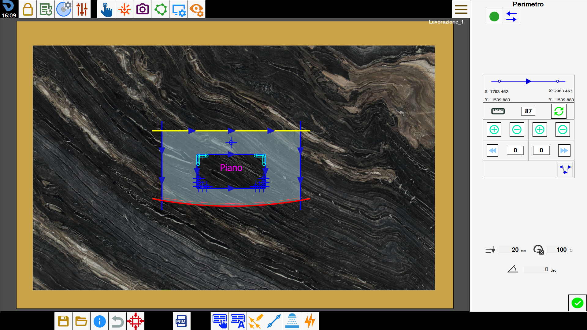
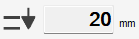
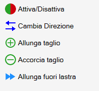
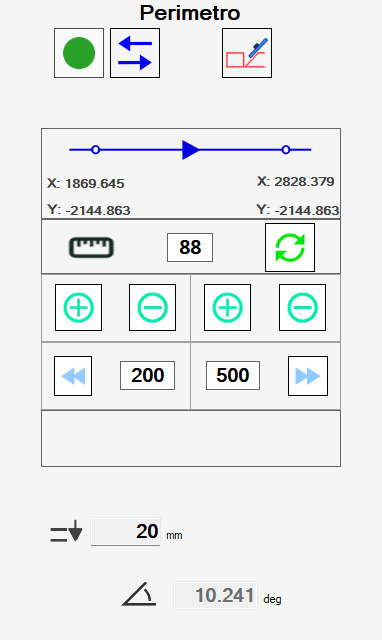
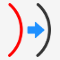

This panel allows the operator to modify some characteristics of a cut.

Buttons
In the top left corner, it is possible to modify the activation of the cut.
Activate/Deactivate cut |
According to the cut type selected, different versions of this panel will be visible.
Cuts with disk
Selecting a cut executed with disk, linear or arc, the following panel is visualized:

The cuts executed with disk are characterized by an initial point and a final point. The arrows define the direction of travel, from beginning to end.

On the table reported below, are reported the buttons with which the operator can modify the characteristics of the cut:
Invert cut direction | |
 | Quantity of extension |
 | Calculate obstruction |
 | Extend cut |
Shorten cut | |
 | Extend extreme initial until edge slab |
Extend end final until edge slab | |
 | Extend short cuts |
Some data regarding the execution of the cut are displayed.
 | Penetration |
Percentage speed | |
 | Inclination |
Modify the cut from the working area
Selecting a cut on the work area and pressing the right button of the mouse, appears a window to be able to modify the cut quickly.

The buttons correspond to the functions already listed. The extreme of the cut closest to the point where the button was pressed is extended.
Cuts on internal arcs
For cuts on arches having curvature turned towards the interior of the piece, it is necessary to consider that the disk’s blade during processing might ruin the side.
For this reason, these cuts must be carried out differently from those for external cuts.

Parametrix proposes two modes for cutting internal arcs, selectable with the button that is located in the top right.
 | Miter Cut Arc |
 | Offset Arc |
NOTEBy default Parametrix recommends to set the processing of these cuts with the 'inclined arch' mode.If is not desired, it is necessary to change the execution mode of each single cut.
Each processing mode possesses merits and defects:
Inclined arches allow a better finish on the final result, which then will require less manual labor to be completed.
However they require a greater effort from the machine, and therefore the processing must be carried out at reduced speeds and with more passes.Offset arches are less onerous with regard to the fatigue that the machine must perform for their working, and therefore can be performed at higher speeds.
In compensation, the disk obstruction causes greater damage to the material, and moreover the material that must be removed in manual finishing phase is greater.
Holes and Millings
Workings like holes and carvings allow a minor number of changes by the operator.

Information related to is available.
 | Penetration |
Tool diameter |
Rims and Holes on vertex
The holes at angle and the recesses are composed respectively of more holes and milling. In the case one of these items is selected, a list of all cuts that compose them is shown.

The operator can decide to activate or deactivate each cut individually using the button on each list entry, or if go to act at the same time on all cuts of the work with the button on the top.
The buttons that appear below the list allow to change the order with which the individual cuts are executed.
 | Move with arrows |
 | Déplacement to the desired position |
Furthermore, the operator can change the penetration of the working through the field below:
| Penetration |